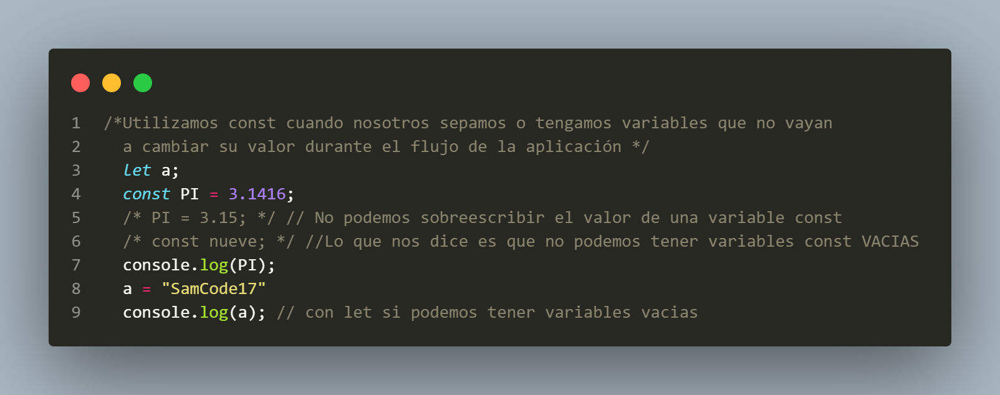
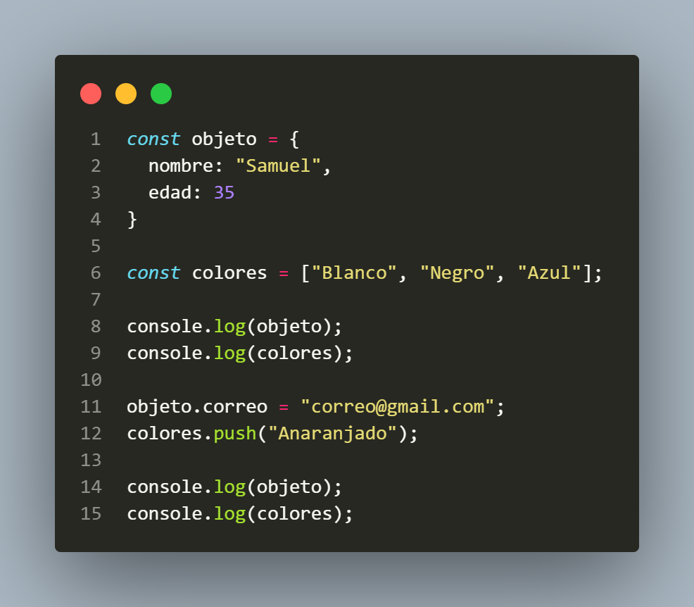

1. VAR ó LET
Si declaramos una variable con var se va guardar en el objeto window(en el navegador, Javascript), que con let no,
y
lo probamos tambien
con la terminal Bash con el objeto de node.js donde al window se le llama "global":


Comprobamos que Fronted_navegador(Javascript del front) como Backend_node.js (Javascript del lado del servidor) por
lo
tanto se considera una mala practica declarar una variable con VAR.
Te invito a revisar su comportamiento en la consola de esta página ó en el archivo HTML.
2. CONST
No nos permitira cambiar el valor de las variables "Primitivas" osea con valores string, number,
boolean, null, undefined y NaN.

Revisa la consola para ver el contenido
Con "Variables Compuestas" como Objetos, Arreglos, etc, si nos permite cambiar/aumentar/elimnar
los
valores!

Entonces cual escogemos entre Let y Const cuando estemos con Valores Compuestos?
Si nuestra variable se mantendra siendo todo el momento con la naturaleza que escogimos incialmente y solo cambia
sus "elementos"
escoge "const" si nuestra variable compuesta pasa de "Arreglo" a "Objeto"(osea que cambia su naturaleza) tendremos
que
escoger "let"